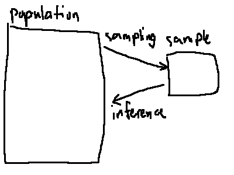
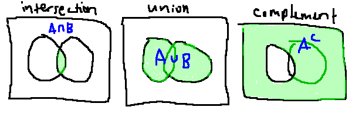
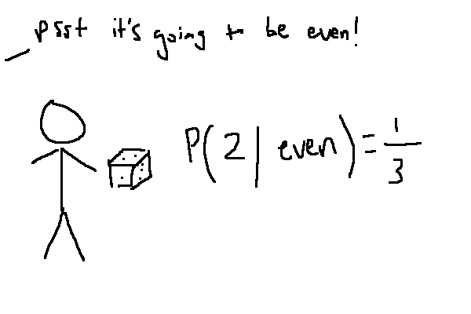
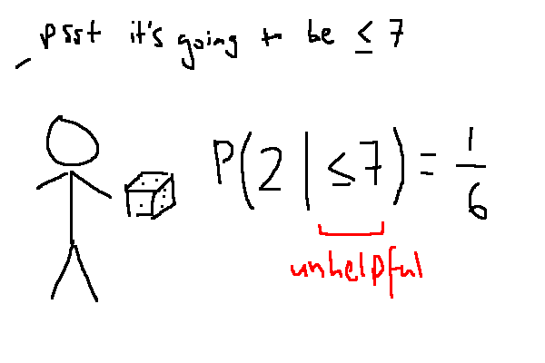
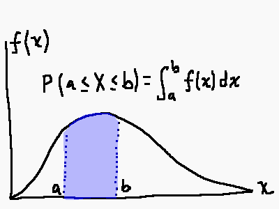

types of statistics:
the generalisation from sample to population is statistical inference
aristotle combined empiricism and rationalism
see also cōgitō ergō sum
after the industrial revolution there was more of an economy, and governments needed to find out different information about their populations
there are 3 lies in society: lies, damned lies, and statistics
– popularised by mark twain
book rec: how to lie with statistics
no two measurements are ever exactly the same

census, survey, experiment, simulation, ...
but to get scientific data we need 2 statistical studies
levels of measurement
if we have a random sample \(x₁, x₂, …, xₙ\) of size \(n\)
if the histogram of the data is symmetric, \(\text{mode} = x̃ = x̄\)
if the histogram is skewed to (has a longer tail on) the right, \( \text{mode} < x̃ < x̄ \)
the second form is nicer for computation since you don't need eg 2 loops
let mut sum_squares @ mut sum = 0;
let n = sample.len() as f64;
for x in sample {
sum += x;
sum_squares += x * x;
}
let s2 = 1./(n-1.) * (sum_squares - sum*sum/n);
let s = s2.sqrt();
the sum of deviations is \(∑\limitsᵢ₌₁ⁿ (xᵢ - x̄) = 0\)
eg rolling a die: \(S = \set{1, 2, 3, 4, 5, 6}\)
kolmogorov's axioms of probability:
assuming all outcomes in \(S\) are equally likely, \(P(A) = \frac{\#A}{\#S}\)

the number of permutations of \(r\) objects among a set of \(n\) is \(P_{n, r} = \frac{n!}{(n - r)!}\)
the number of ways to choose \(r\) of \(n\) objects, regardless of order, is \[ C_{n, r} = {n \choose r} = \frac{P_{n, r}}{r!} = \frac{n!}{r! (n - r)!} \]
\(n \choose r\) is also called the binomial coefficient and is equal to \({n \choose n - r}\)
eg there are \({11 \choose 4, 4, 2, 1} = 34650\) ways to rearrange the letters in "mississippi"
the probability that \(A\) happens given \(B\) is \( P(A \mathbin| B) = \frac{P(A ∩ B)}{P(B)} \)
this changes the sample space
eg if you're rolling a fair die, \(P(\set{5} \mathbin| \set{1, 3, 5}) = \frac13\)
two events \(A\) and \(B\) are independent if \(P(A \mathbin| B) = P(A)\), or equivalently if \(P(A ∩ B) = P(A)P(B)\)
two mutually exclusive events are always dependent


| smoking | non- smoking |
marginal total |
|
|---|---|---|---|
| bronchitis | 50 | 10 | 60 |
| no bronchitis | 20 | 20 | 40 |
| marginal total | 70 | 30 | 100 |
eg \( P\left(\text{smoking} \middle| \text{bronchitis}^∁\right) = \frac12 \)
smoking and bronchitis are dependent because \(P(S) ≠ P(S \mathbin| B)\)
the events \(B₁, B₂, …, Bₖ\) partition a sample space \(S\) if
suppose \(k = 2\) and some event \(A\) has occurred in a random manner in \(S\), and we want to know \(P(Bᵢ \mathbin| A)\). since \(A = (A ∩ B₁) ∪ (A ∩ B₂)\) from the partition, \[ P(Bᵢ \mathbin| A) = \frac{P(Bᵢ ∩ A)}{P(A)} = \frac{P(A \mathbin| Bᵢ)P(Bᵢ)}{P(A)} = \frac{P(A \mathbin| Bᵢ)P(Bᵢ)}{∑ⱼ P(A \mathbin| Bⱼ)P(Bⱼ)} \]
\(P(Bᵢ \mathbin| A)\) is the posterior probability and \(P(Bᵢ)\) is the prior probability
this tells us how to update \(P(Bᵢ)\) given the new information \(P(A)\)
the sample space \(S\) can be either discrete (there are countably many outcomes) or continuous (there are uncountably many outcomes)
we also define a probability (mass) function \(p\) which takes the numerical values of the random variable. we write \(P(X = x)\) or \(p(x)\)
example: tossing a coin twice, \(X\) is the number of heads we get (0 or 1 or 2). then we can make the probability density function (PDF) of \(X\):
| X | 0 | 1 | 2 |
|---|---|---|---|
| P(X = x) | \(\frac14\) | \(\frac12\) | \(\frac14\) |
which has these properties. they look suspiciously similar to the axioms of probability!
if it's continuous,

the cumulative distribution function (CDF) of a random variable, \(F(x)\), is defined as \[ F_X(x) = P(X ≤ x) = ∑\limits_{X ≤ x} p(x) \]
for the coin example, \(F(1) = P(X ≤ 1) = \frac34\) etc
if it's continuous, \[ F_X(x) = P(X ≤ x) = ∫_{-∞}ˣ f(t) \;\mathrm dt \]
the cdf \(F(x)\) is more informative than the pdf \(f(x)\) about \(X\)
cdf is nondecreasing
for continuous variables we can say \(P(X ≤ a) = P(X < a)\)
example. let \[ f(x) = \begin{cases} cx² + x, & 0 ≤ x ≤ 2\\ 0, & \text{otherwise} \end{cases} \] (a) find \(c\).
\[ ∫₀² \left(cx² + x\right) \;\mathrm dx = 1 ⇔ \left.\left(\frac c3 x³ + \frac12 x²\right)\vphantom∫\right|₀² = \frac83 c + 2 = 1 \]
therefore \(c = -\frac38\)
(b) find \(F(x)\).
\[ ∫₀ˣ \left(-\frac38 t² + t\right) \;\mathrm dt = \left.\left(-\frac18 t³ + \frac12 t²\right)\vphantom∫\right|₀ˣ = -\frac18 x³ + \frac12 x² \]
therefore, \[ F(x) = \begin{cases} 0, & x < 0\\ -\frac18 x³ + \frac12 x², & 0 ≤ x < 2\\ 1, & x ≥ 2 \end{cases} \]
(c.i) evaluate \(P(0 ≤ X ≤ 0.5)\) using pdf \(f(x)\)
\[ ∫₀^{0.5} \left(-\frac38 x² + x\right) \;\mathrm dx = \left.\left(-\frac18 x³ + \frac12 x²\right)\vphantom∫\right|₀^{0.5} = \frac7{64} \]
(number theory time! \(77 · 73 = (7 · (7 + 1)) \mathbin⧺ (7 · 3) = 5621\) etc)
(c.ii) using cdf \(F(x)\)
\[ F(0.5) - F(0) = -\frac18 \left(\frac12\right)³ + \frac12 \left(\frac12\right)² = -\frac1{64} + \frac18 = \frac7{64} \]
this is a weighted average. \(E(X)\) is not necessarily a possible value for \(X\)
if \(g\) is a real-valued function we can say \( E\set{g(X)} = μ_{g(X)} = \begin{cases} ∑\limits_{\text{all }X} g(X)p(x)\\ ∫_{-∞}^∞ g(X)f(x) \;\mathrm dx \end{cases} \)
let \(X\) and \(Y\) be random variables and \(a\) and \(b\) be any real constants. then
expected value is another measure of central tendency
the variance of a random variable \(X\) is given by \( \var(X) = E\left((X - μ)²\right) = σ_X² \)
and this is actually the same as \[ \begin{align*} E(X² - 2μ X + μ²) & = E(X²) - 2μ E(X) + E(μ²)\\ & = E(X²) - 2μ² + μ² \\ & = E(X²) - μ² \end{align*} \]
the standard deviation of \(X\) is \(\stdev(X) = σ_X = \sqrt{σ²}\)
let \(X, Y\) be random variables and \(a, b\) be any real constants. then
if they're not independent we need to take the covariance \(\gdef\cov{\operatorname{cov}}\cov(X, Y)\) into account
example. let a random variable \(Y\) have the following pdf: \[ f(y) = \begin{cases} -\frac38y² + y & 0 ≤ y ≤ 2\\ 0 & \text{otherwise} \end{cases} \]
(a) the first moment is \[ E(Y) = ∫₀² yf(y) \;\mathrm dy = ∫₀² y \left(-\frac38y² + y\right) \;\mathrm dy = \left.\left(\frac{y³}3 - \frac{3y⁴}{32}\right)\right|₀² = \frac76 \]
(b) since the second moment is \[ E(Y²) = ∫₀² y² f(y) \;\mathrm dy = ∫₀² y² \left(-\frac38y² + y\right) \;\mathrm dy = \frac85 \]
the variance is \[ \var(Y) = E(Y²) - μ² = \frac85 - \left(\frac76\right)² = \frac{43}{180} = 0.238̄ \]
for any random variable \(X\) having mean \(μ\) and variance \(σ²\), \[ P(\left|X - μ\right| < kσ) ≥ 1-\frac1{k²} \] where \(k > 1\)
alternatively \[ P(μ - kσ < X < μ + kσ) ≥ 1 - \frac1{k²} \]
this provides the minimum probability that the random variable is within \(k\) standard deviations of \(μ\).
when a random variable indicates a single numerical response it is called univariate. when it could have more than one response it's called multivariate. in particular when there are 2 responses it's bivariate
eg if we are measuring height and weight at the same time
the joint probability density/mass function of \(X₁\) and \(X₂\) is \( p(x₁, x₂) = P(X₁ = x₁, X₂ = x₂) \) for all real numbers \(x₁, x₂\) in their domains
it satisfies the properties:
the marginal probability distributions of \(X₁\) and \(X₂\) respectively are given by \[ p₁(x₁) = ∑\limits_{x₂} p(x₁, x₂) \] and \[ p₂(x₂) = ∑\limits_{x₁} p(x₁, x₂) \]
the conditional probability function of \(X₁\) given \(X₂=x₂\) is \[ P(X₁ = x₁ \mathbin| X₂ = x₂) = \frac{p(x₁, x₂)}{p₂(x₂)} \] provided \(p₂(x₂) ≠ 0\)
two random variables are independent iff either \[ p(x₁ \mathbin| x₂) = p(x₁) \] or equivalently, \[ p(x₁, x₂) = p(x₁) · p(x₂) \] for all \(x₁, x₂\)
\(\gdef\cov{\operatorname{cov}}\)the covariance of two random variables is defined by \[ \cov(X₁, X₂) = E[(X₁ - μ₁)(X₂ - μ₂)] = E(X₁X₂) - μ₁μ₂ \] where \[ E(X₁X₂) = ∑\limits_{x₁}∑\limits_{x₂} x₁x₂ p(x₁, x₂) \] it measures how strongly two variables are (linearly) associated or related. it can be positive or negative or zero
if they're continuous we get \[ E(X₁X₂) = ∬ x₁x₂ p(x₁, x₂) \;\mathrm dx₁ \;\mathrm dx₂ \]
\(\gdef\corr{\operatorname{corr}}\)since the covariance depends on the measurement unit, we standardize it, which is called the correlation coefficient \[ \corr(X₁, X₂) = ρ_{x₁, x₂} = \frac{\cov(X₁, X₂)}{\sqrt{\var(X₁)}\sqrt{\var(X₂)}} \]
it measures the direction and strength of the linear association between \(X₁\) and \(X₂\). it's not a slope! \(-1 ≤ ρ ≤ 1\)
the sample correlation coefficient is defined as \[ \begin{align*} r_{X, Y} &= \frac{\cov(X, Y)}{\sqrt{\var(X)}\sqrt{\var(Y)}}\\ &= \frac{ n ∑ xy - ∑ x ∑ y }{ \sqrt{n ∑ x² - \Big(∑ x\Big)²} \sqrt{n ∑ y² - \Big(∑ y\Big)²} } \class{comment}{\text{/* why? */}}\\ &= \frac1{n - 1} ∑ᵢ₌₁ⁿ \frac{xᵢ - x̄}{sₓ}\frac{yᵢ - ȳ}{s_y} \end{align*} \]
the continuous version of the joint pmf is the joint pdf \(f(x₁, x₂)\)
the other stuff is all the same except the usual
s/
\(\displaystyle∑\) /
\(\displaystyle∫\) /g
and
s/
\(p\)/
\(f\)/g
\[ P(a ≤ X₁ ≤ b, c ≤ X₂ ≤ d) = ∫_cᵈ∫_bᵃ f(x₁, x₂) \;\mathrm dx₁ \;\mathrm dx₂ \]
\[ f₁(x₁) = ∫_{-∞}^∞ f(x₁, x₂) \;\mathrm dx₂ \]
for two random variables,
a random variable has a discrete uniform distribution if its pmf is given by \[ P(X = x) = p(x) = \frac1k, \quad x = x₁, x₂, …, xₖ \]
then \(E(X) = \frac1k ∑ᵢ₌₁ᵏ xₖ\) and \(\var(X) = \frac1k ∑ᵢ₌₁ᵏ (x - μ)²\)
if we have two mutually exclusive events with \(P(\text{success}) = p\) and \(P(\text{failure}) = 1 - p\). let \(X = 1\) if success and 0 otherwise. then the probability distribution is \[p(x) = pˣ (1 - p)¹⁻ˣ\]
\(X\) is called a bernoulli random variable with parameter \(p\), and its distribution is denoted \(X∼\Ber(X)\)
here \(E(X) = p\) and \(\var(X) = p(1 - p) = pq\)
tossing a coin is a bernoulli random variable with \(p = \frac12\)
what if we repeat the bernoulli trials \(n\) times?
suppose we are interested in \(x\) successes among \(n\) trials, and \(X\) denotes the number of successes. then the probability distribution of \(X\) is \[ p(x) = {n \choose x} pˣ (1 - p)ⁿ⁻ˣ, \quad x = 0, 1, 2, …, n \]
this is the binomial probability distribution. \(E(X) = np\) and \(\var(X) = np(1 - p)\). we write this one as \(X∼\bin(n, p)\)
cdfs are on book pp726-731
what if there are more than 2 categories?...